1. 概述¶
如果您遇到过以下烦恼，PPT画图慢且不美观，尝试这款thinkcell软件。
thinkcell是世界五百强公司和咨询公司最常用的图表绘制工具。以插件的形式嵌入到PPT中，对于内存等资源的占用不大。
下面是使用thinkcell的简单教程，想获取更多请参考官网教程
2. 安装thinkcell¶
**STEP 1 进入thinkcell官网下载页面 点此进入下载页面
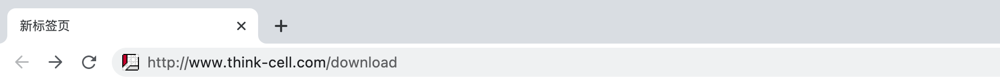
STEP 2 输入学校或企业邮箱，点击Request download information
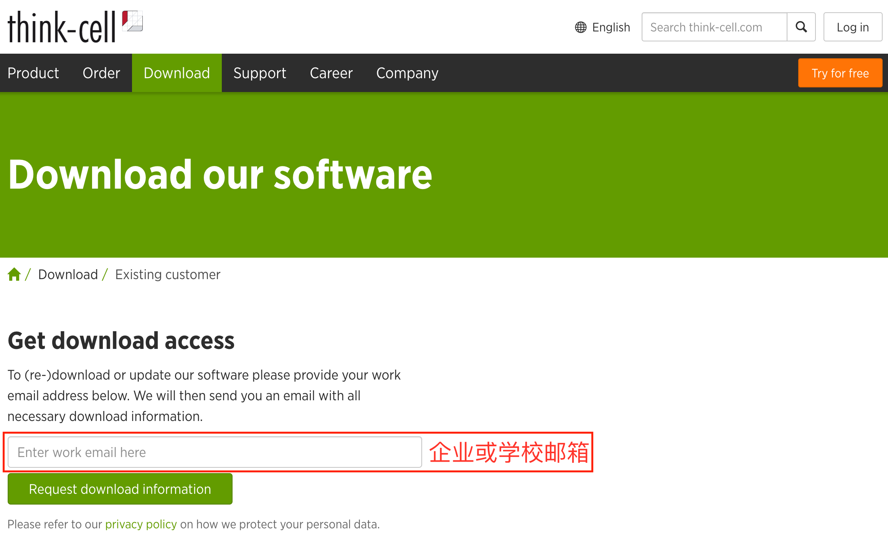
STEP 3 收到邮件后，点击链接进入注册页面
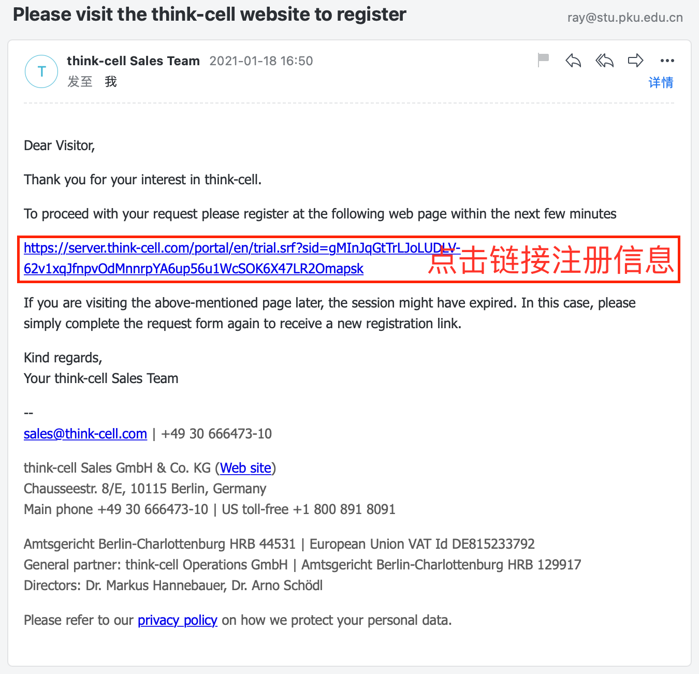
STEP 4 填写注册信息
注：北大学生能在Unit中找到所在学院
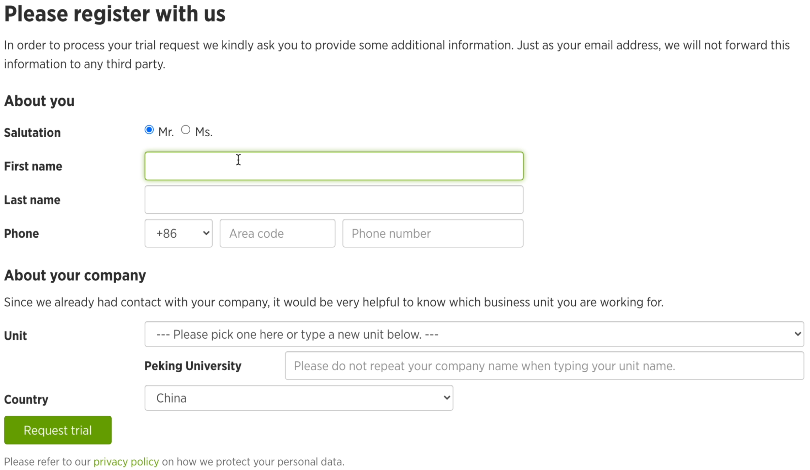
STEP 5 下载安装包
注：复制授权码 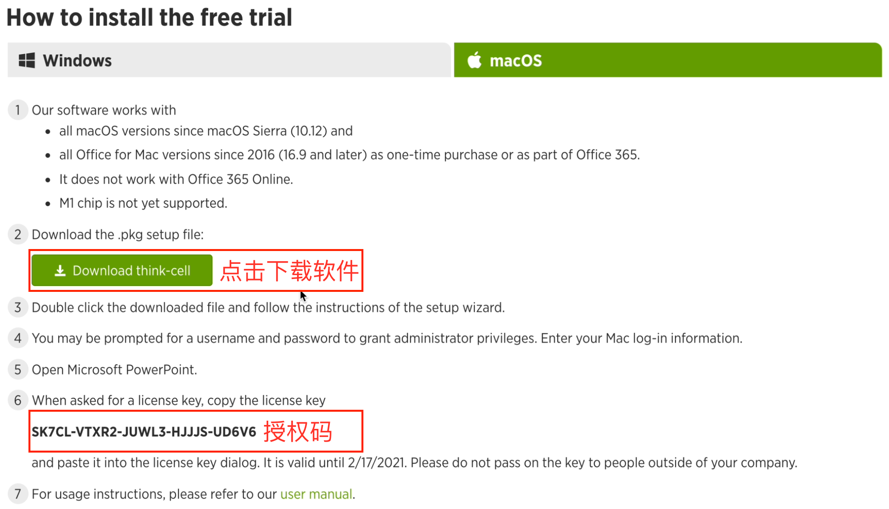
STEP 6 安装软件

STEP 7 输入授权码并安装
STEP 8 插件安装成功
注：插件安装成功后，请访问支持页面，获得更多教程 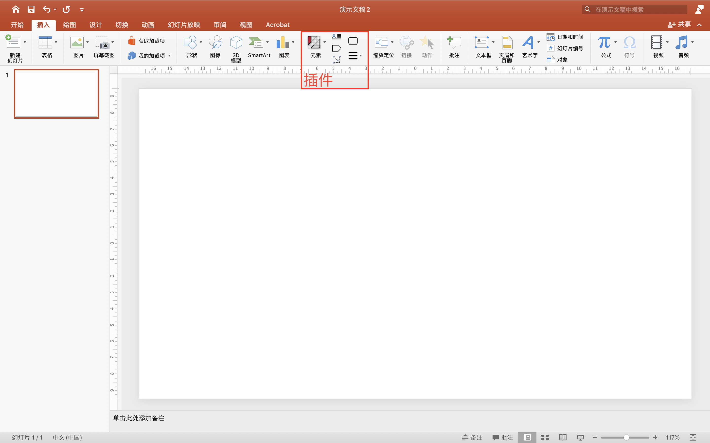
3. 基本概念¶
3.1. STEP 1 认识界面¶
元素(基本元素、议程、图表类型)
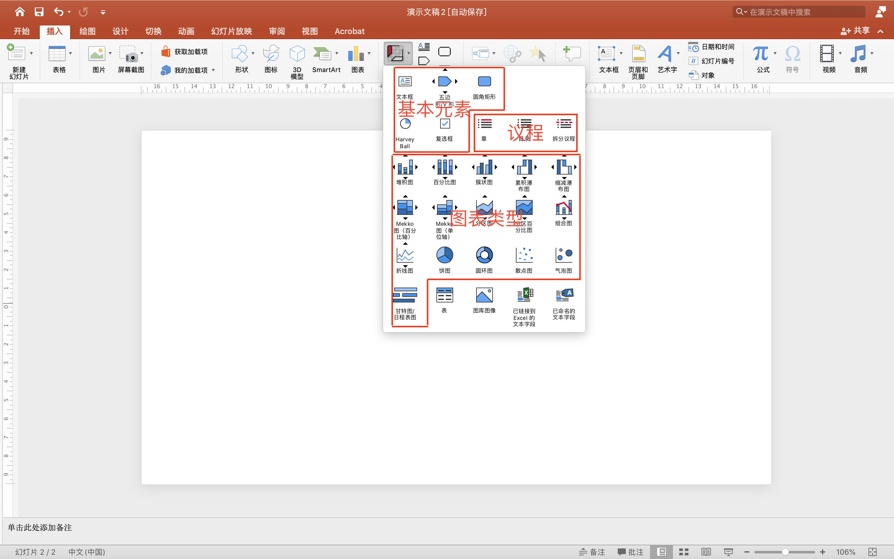
通用连接器
每个图表元素都能提供可连接的点。通用连接器能连接属于或不属于同一元素的任意两个可连接的点
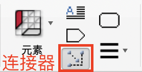 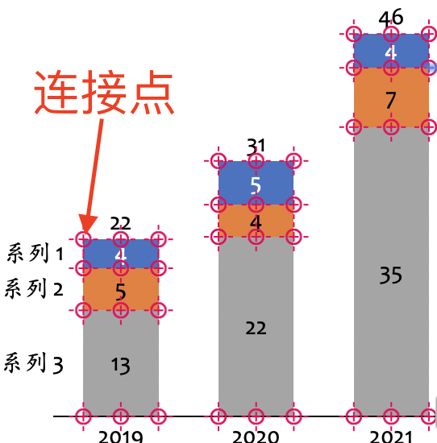
其他工具 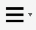
其中，用户手册包含讲授所有基本概念的简短章节，以及有关制作图表简介和布局简介的简介章节。当然，该手册还详细讲述了所有产品功能，并为高级用户提供了提示和技巧
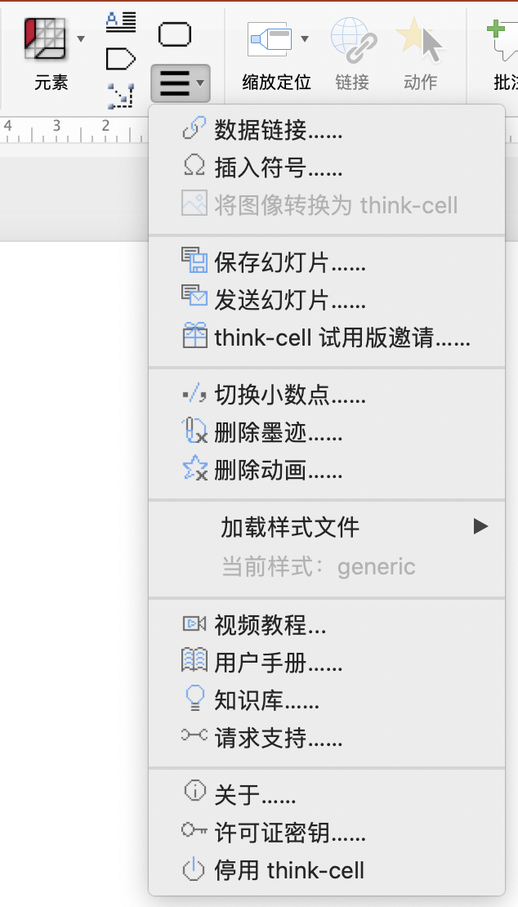


3.4. STEP 4 选择元素及特征¶
浮动工具栏
左键单击选择某元素或特征，显示浮动工具栏，可对外观进行更改
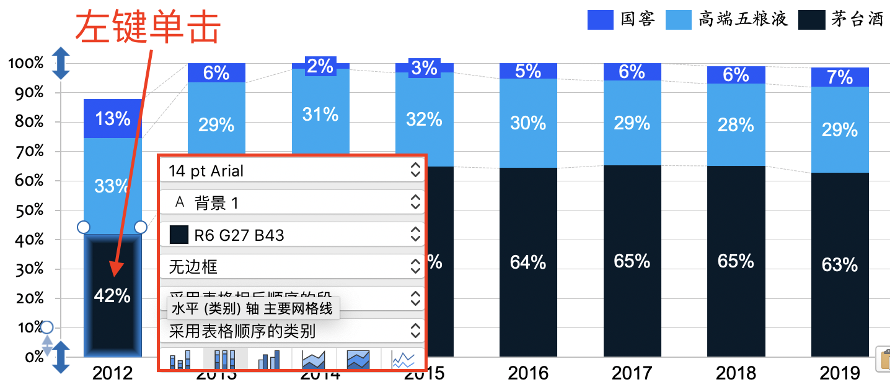
上下文菜单
右键单击某特征时，会显示其上下文菜单，可将其他特征添加到元素或删除当前可见的特征
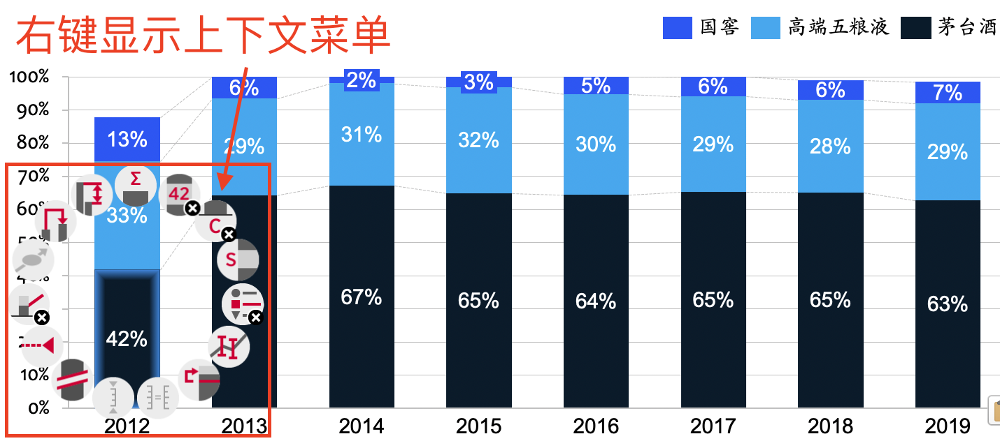
选择元素及特征
选择同类元素
同时按住
commandA，选中后显示蓝色阴影框
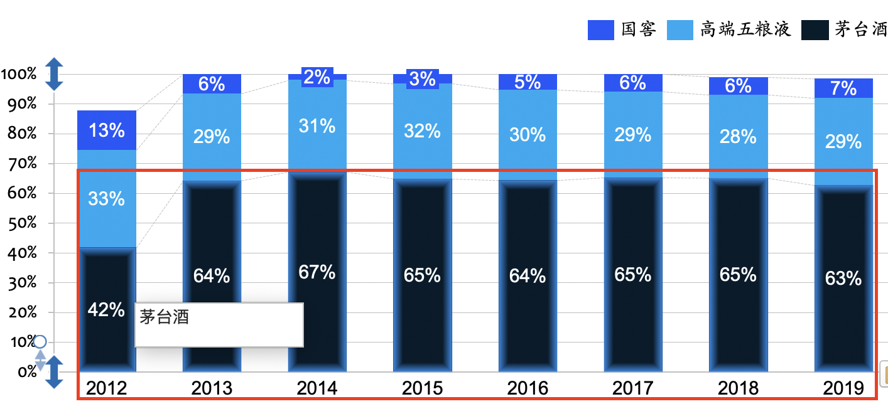
选择多类元素
按住
shift，移动鼠标，选中后显示橘色阴影框
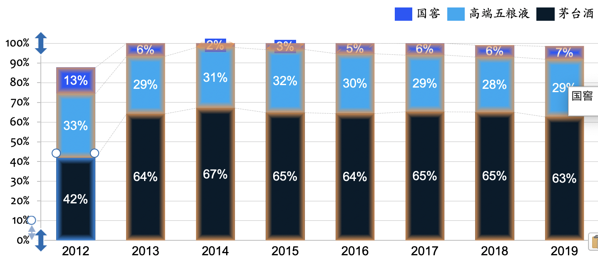